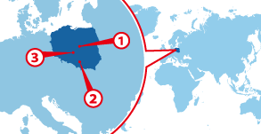

Warsaw
Warsaw Kraków
Kraków Łódź
Łódź
ワーホリ協定国一覧へ戻る

人気都市 BEST3
ポーランド基本情報
| 首都 | Warsaw |
|---|---|
| 言語 | Polski |
| 面積 | 312,679 km²(70位) |
| 人口 | 38,485,779人(34位) |
| 通貨 | złoty (PLN) |
＊2014 年10 月時点の数値です
| 日本時間 | Warsaw |
|---|---|
 1月1日 09:00am |
1月1日 02:00am |
＊サマータイムの期間は時差が変動します
| 首都 | Warsaw |
|---|---|
| 面積 | 312,679 km²(70位) |
| 人口 | 38,485,779人(34位) |
| 言語 | Polski |
|---|---|
| 通貨 | złoty (PLN) |
＊2014 年10 月時点の数値です |
|
日本との時差
| 日本時間 | Warsaw |
|---|---|
|
1月1日 09:00am |
1月1日 02:00am |
＊サマータイムの期間は時差が変動します
ポーランってどんな国？
ポーランドは通称「Heart of Europe (ヨーロッパの心臓)」とも呼ばれる、地理的/文化的に東西ヨーロッパの懸け橋になっている国です。国名の語源である「平原」が示す通り、国土には大草原が広がっています。そしてそれだけではなく、ポーランドには原生林を始め、美しいバルト海の海岸、氷河時代から存在する湖水地帯、さらには砂丘地帯も存在しており、様々な姿の自然を体験することができるでしょう。
ポーランドはショパンを始め、キュリー夫人やヨハネ・パウロ2世といった数多くの著名人/芸術家/音楽家を生み出しました。また、ヨーロッパの中心に位置する為、数々の歴史的な出来事の舞台にもなっており、その歴史をたどるツアーやショーが人気を博しています。
ポーランド人のルーツとされる古代サルマチア人にはとにかく客人をもてなす文化があり、現在のポーランド人にもその心得が息づいています。
日本と同じ様に、ポーランドにも四季があります。西部は比較的温暖で、東部は涼しげな内陸性気候です。日本とのポーランドの大きな違いは気温で、日本と比べると10度程度気温が低いです。夏場も日中は気温が上がりますが、日が落ちると長袖が必要になります。
▼▼▼まずは無料セミナーへ！ワーキングホリデー＆留学の無料セミナーはこちら！▼▼▼